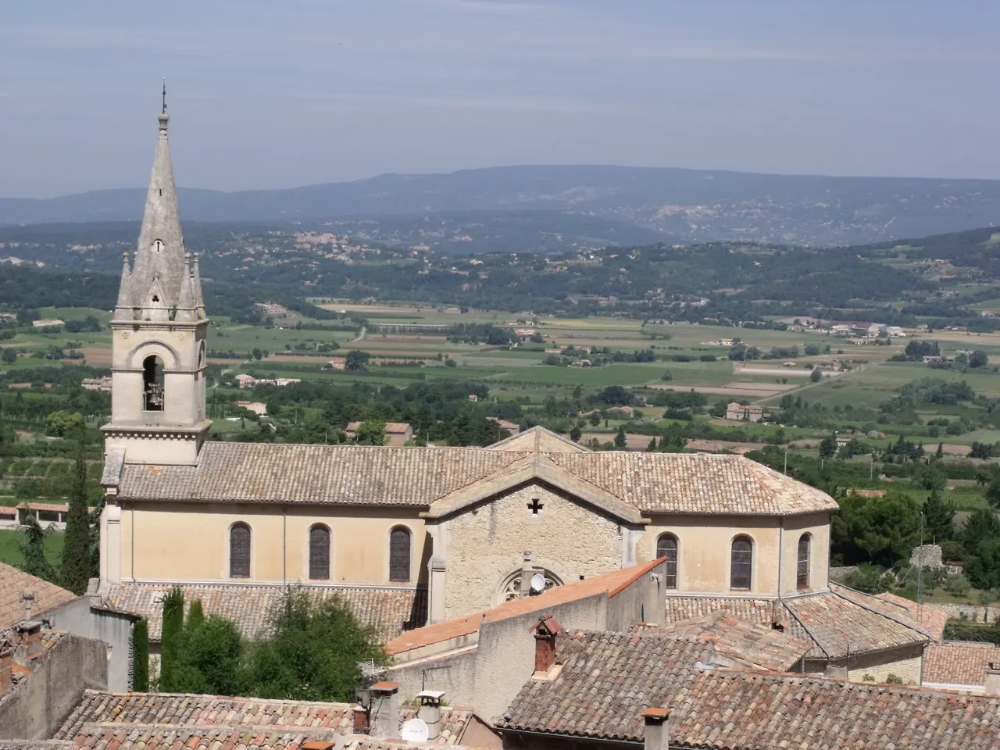
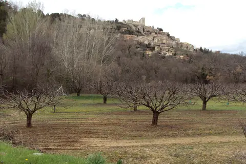

{kind=link}
관광·미술관
Nous avons déjà des billets.
이미 표가 있습니다.
누 자봉 데자 데 비예

뤼베롱 산맥 북쪽 비탈에 자리 잡은 마을로, 뤼베롱 마을들 중 수직 고도차가 가장 큰 계단식(Terraced) 언덕 마을이다.
아래쪽 신시가지 광장에서부터 위쪽 옛 마을 정상까지 수백 개의 돌계단과 가파른 골목길이 이어지며, 12세기 로마네스크-고딕 양식의 옛 성당(Vieille Église)이 삼나무 숲속 정상에서 마을을 굽어보고 있다.
정상 테라스에 서면 맞은편 언덕 위에 사드 후작(Marquis de Sade)의 성채가 우뚝 선 라코스트(Lacoste) 마을과 끝없이 펼쳐진 칼라봉 계곡의 포도밭, 그리고 저 멀리 '프로방스의 거인' 몽방투(Mont Ventoux)까지 막힘없는 대파노라마가 펼쳐진다.
"고르드처럼 연극적이고 붐비는 석조 요새와 달리, 계단 골목을 오르며 만나는 아늑한 제빵 공방과 정상 테라스의 광대한 계곡 조망이 매력적인 마을이다." 마을 하부에서 계단을 따라 20분간 옛 성당까지 올라가 시원한 바람을 맞으며 맞은편 라코스트 성채를 바라본 뒤, 중간 테라스 카페에서 휴식을 취하는 60분 코스로 적합하다.
Day 17 Optional 1순위다. Optional을 모두 빼도 일정은 완전하게 성립한다.
과거 뤼베롱의 곡창 지대로 빵 박물관(Musée de la Boulangerie)이 있었을 만큼 제빵과 밀 재배 전통이 깊으며, 계단 중간중간에 자리한 로컬 베이커리와 카페가 훌륭하다.
| 항목 | 상세 정보 |
|---|---|
| 위치 | 84480 Bonnieux, Vaucluse |
| 마을 입장/요금 | 상시 개방 / 무료 |
| 보행 난이도 | 하부 주차장에서 정상 옛 성당까지 가파른 돌계단 오르막 (도보 약 15~20분 소요), 편안한 신발 필수 |
| 추천 주차장 | Parking du Terrail (마을 중심 하부 무료 주차장) 또는 Parking de l'Église Haute (상부 성당 인근 주차 공간, 진입로 좁음) |
| 마을 시장 | 매주 금요일 오전 (08:00–13:00): 마을 중심 테라스 광장에서 개장 |
Nous avons déjà des billets.
이미 표가 있습니다.
누 자봉 데자 데 비예
On peut prendre des photos ?
사진 찍어도 되나요?
옹 푀 프랑드르 데 포토
Où commence la visite ?
관람은 어디서 시작하나요?
우 코망스 라 비지트

Gordes 북쪽 좁은 계곡의 12세기 Cistercian 수도원. 화려함보다 절제된 로마네스크 건축과 침묵의 공간이 핵심이다.

뤼베롱 현지 농부들이 직접 재배하고 만든 신선 농산물과 특산품을 판매하는 생산자 직거래 일요 시장. 이번 Day 17–18 일정에는 넣지 않은 지역 참고 Place다.

바위 언덕 위에 석회암 집들이 층층이 매달린 Luberon의 대표 이미지. 진입도로 파노라마와 해질 무렵의 돌빛이 핵심이다.

대형 관광버스가 닿지 않아 뤼베롱에서 가장 고요하고 평화로운 '숨겨진 보석' 마을. 언덕 정상의 17세기 예루살렘 풍차(Moulin de Jérusalem)와 현지인들의 정겨운 일상이 살아있는 골목길.

Bonnieux 맞은편 언덕에 붙은 작은 석조마을. 중세 성벽 골목과 Marquis de Sade로 알려진 성터가 마을의 성격을 만든다.

뤼베롱 남쪽 기슭의 평지형 마을. 카페·상점·갤러리와 르네상스 성이 어우러진 우아한 생활형 프로방스다.